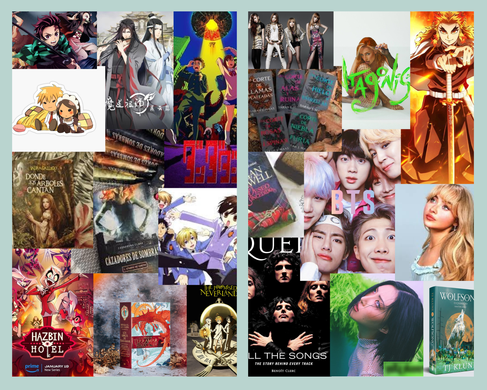

Mi Lugar favorito es Escocia 🏰
Me encanta Escocia aunque nunca lo he visitado es un lugar al que tengo muchas ganas de visitar, poder explorar el castillo de Edimburgo, pasear por la Royal Mile, ver las vacas peludas, hacer una ruta por las highlands y poder ver la Isla de Sky, mi sueño es poder viajar a un monton de lugares pero Escocia es mi lugar pendiente, me enamore cuando lei un libro hace muchos años y no veo el momento de conocerlo

Mi animal favorito es el Leon/Perezoso 🦁
Me encantan los leones desde que tengo uso de razon, puede que fuera influenciada por las peliculas de mi infancia me encantaba ver las peliculas de disney en la que los animales eran protagonistas y el rey leon me conquisto a tal punto que iva rugiendo por mi casa como si fuera uno de ellos y aunque los adoro se que mi animal espiritual seria mas un perezoso he de decir que no me quejo esos animales me han conquistado tambien el corazon, no me importaria rencarnarme en uno de ellos 😜

Mis pasiones son la lectura, la musica y la animacion📚🎤
Me encanta leer es lo que me permite vivir mas vidas y conocer lugares, poder evadirme de la realidad y soñar, la musica me acompaña desde muy pequeña y a dia de hoy sigo disfrutando dandome un paseo con los cascos y dar todo de mi en esa cancion, la animacion la conoci de casualidad pero gracias a ella me ha abierto un mundo que no conocia donde me senti acogida y arropada.
no tengo un leon pero tengo una pequeña fiera negra